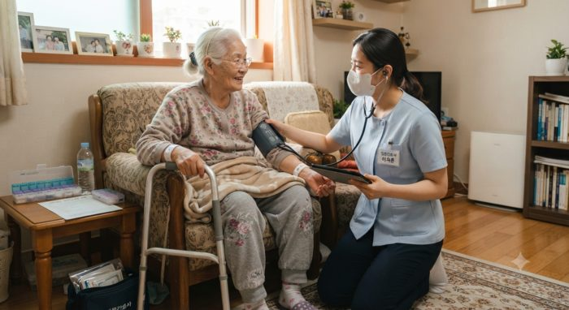
재택의료NEWS중증 입원 후 병원에서는 퇴원하라 하고...재택의료 서비스 받고 싶은데...
중증으로 대형, 상급 병원에 입원했다 치료를 받고 난 뒤 퇴원을 해야 한다. 대형, 상급 병원은 급성기 환자를 치료해야 하기 때문에 오랫동안 환…
방문진료와 재택의료센터, 가정간호·방문간호, 그리고 건강정보까지 — 집에서 이어지는 의료의 기록입니다. 분야를 눌러 원하는 주제만 골라 보세요.
15건의 기사

재택의료NEWS중증으로 대형, 상급 병원에 입원했다 치료를 받고 난 뒤 퇴원을 해야 한다. 대형, 상급 병원은 급성기 환자를 치료해야 하기 때문에 오랫동안 환…
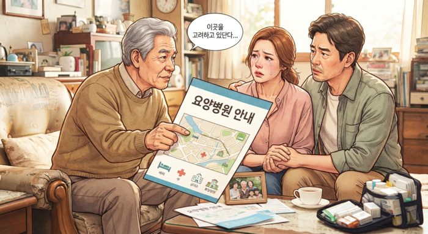
재택의료NEWS전체 인구 중 65세 이상 고령 인구가 20.7%에 달하는 것으로 조사됐다. 인구 5명 중 1명은 고령자다. 국가데이터처가 28일 발표한 '…
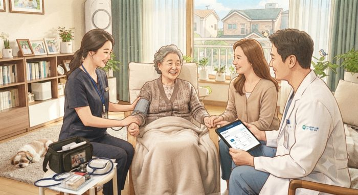
재택의료NEWS아버님, 어머님의 거동이 불편할 경우 일반적으로 요양원이나 요양병원에 입원시키는 경우가 많다. 장기요양등급이 있는 부모님의 경우 요양원에 입소…
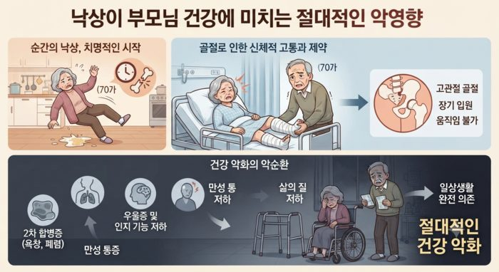
재택의료NEWS'낙상'은 부모님의 건강 상태를 급속도로 악화시킨다. 낙상을 통해 병원에 입원해 시술 혹은 수술을 받게 되면, 거동이 불편해지고, 이에 따라…
 재택의료HOT
재택의료HOT
65세 이상 고령 인구가 20.7%에 달하는 것으로 국가데이터처 발표 '2025년 인구주택총조사 등록센서스 결과'에 나왔다. 인구 5명 중 1…
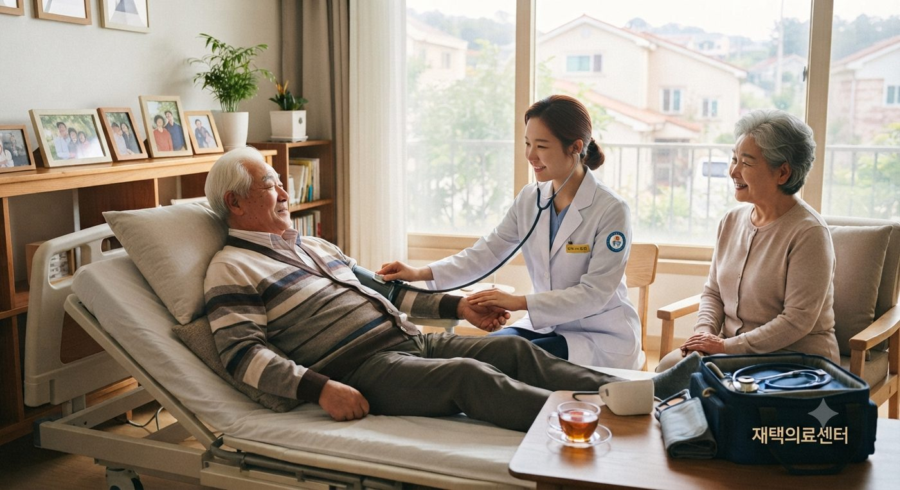
재택의료HOT정부가 오는 2030년까지 요양병원 간병비 급여화 시범사업을 시행한다. 시범사업 대상은 최고도·고도 환자와 중도 환자 일부 약 8만5000명이…
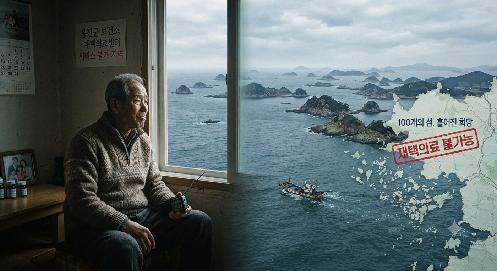
우리동네인천 옹진군에는 모두 100개의 섬이 있다. 이 중 사람이 사는 유인도는 25개, 사람이 살지 않는 무인도는 75개에 달한다. 그런데 인천 옹…
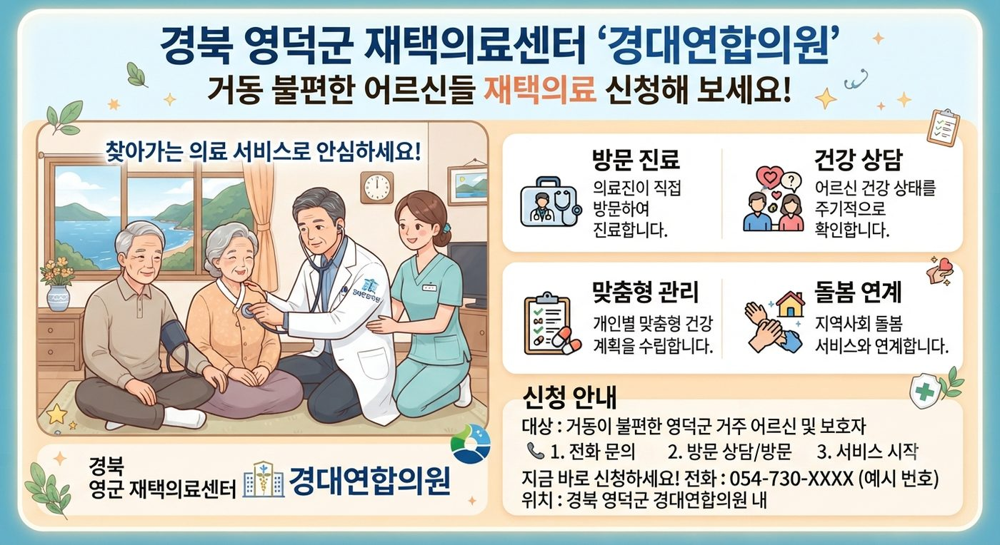
우리동네경북 영덕군에는 모두 3곳의 재택의료센터가 있다. 영덕군보건소, 경대연합의원, 영덕파티마마취통증의학과의원 등이다. 최근 영덕군보건소와 경대연합…
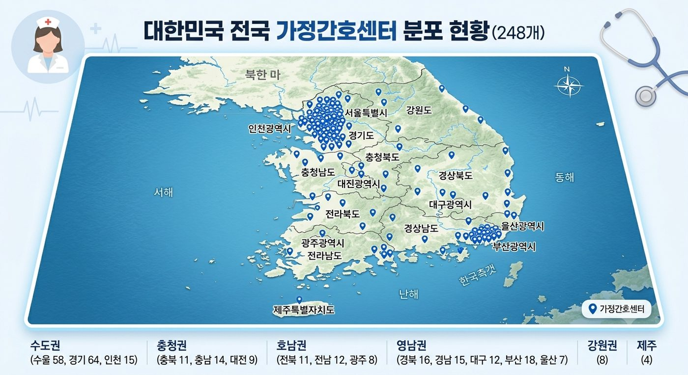
가정간호'가정간호사' 제도가 있는데도, 아직 이 제도에 대해 잘 알지 못하는 분들이 많다. 우선 전국적으로 가정간호센터를 운영하는 기관은 모두 248…
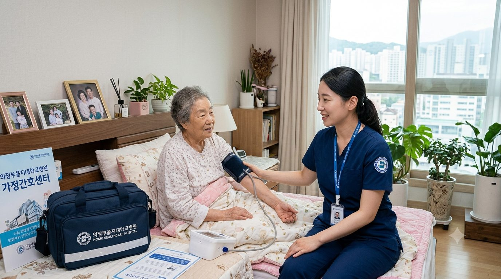
가정간호의정부을지대학교병원(병원장 송현)이 '가정간호'를 본격 시행한다. '가정간호'는 입원 치료 후 지속적인 관리가 필요한 환자 집으로 가정 간호사…
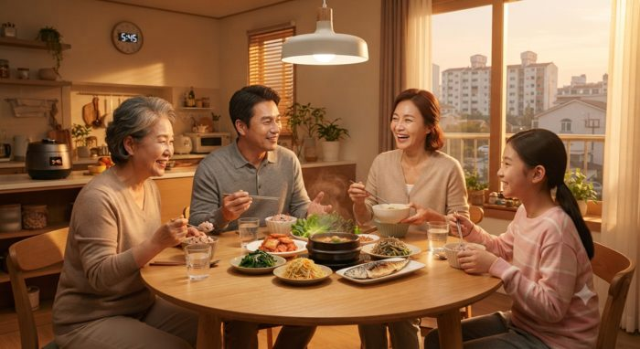
건강정보저녁 식사가 그 어떤 식사보다 중요할 수 있다. 이유는 간단하다. 저녁 식사 후 수면을 취해야 하고, 이 때문에 소화를 잘 시켜야 한다. 너…
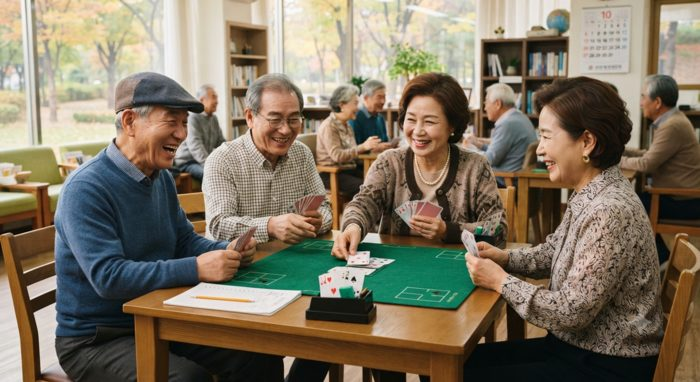
건강정보노쇠를 피할 수는 없다. 다만 노쇠의 속도를 늦출 수밖에 없다. 단순히 오래 사는 것보다 오래 살더라도 뇌 건강을 유지하며 생의 마지막 순간까…
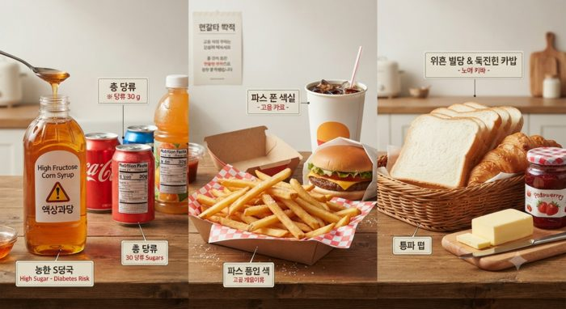
건강정보물가가 계속 오르고 있다. 식음료 값도 천정부지로 오르고 있다. 당연히 음식을 사 먹으면 돈을 지불해야 한다. 그런데 음식을 먹을 때 오히려…
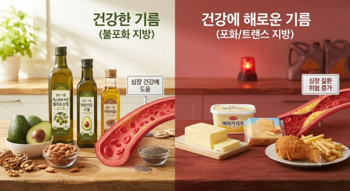
건강정보'기름'은 중요하다. 매일 기름을 섭취할 수밖에 없기 때문에 가급적 좋은 기름을 몸에 넣어줘야 한다. 나쁜 기름은 피해야 한다. 그렇다면 뭐…
건강을 돌보는 일과 재산을 돌보는 일은 결국 하나의 문제다. 이호재 소장이 재택의료 시대의 돌봄 비용을 짚는다.